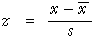
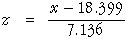

Obtaining stanines
In the previous section, we showed how z-scores and stanines were obtained by standardising individual marks with the equation:

In this equation, the mean  and standard deviation s
used to scale the marks were the mean and standard deviation in the class.
When a national reference population is available, the mean and standard deviation
from this distribution can be used to obtain z-scores, and hence stanines.
and standard deviation s
used to scale the marks were the mean and standard deviation in the class.
When a national reference population is available, the mean and standard deviation
from this distribution can be used to obtain z-scores, and hence stanines.
The national distribution of marks in the 'Checkout' task in the School Entry Assessment kit was shown on the previous two pages. The mean of this distribution is 18.399 and the standard deviation is 7.136, so z-scores can be found with the equation

The diagram below illustrates how a class of marks can be transformed with this equation into z-scores.
Click on the crosses for individual students to read off the raw mark and z-score. The diagram also shows how stanines are obtained from these z-scores.
Use the pop-up menu to select Good class. Observe that the same equation is used to obtain z-scores for this class, so the z-scores of most students are positive. (If each class had been standardised with its own mean and standard deviation, about half of each class would have had positive z-scores.)
Using a reference population to obtain z-scores and stanines therefore makes it easier to compare classes or other groupings of students.